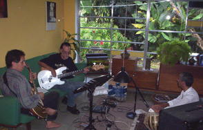
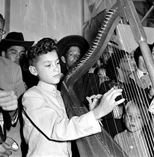
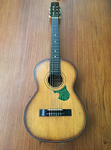
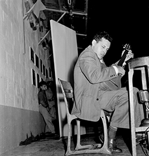
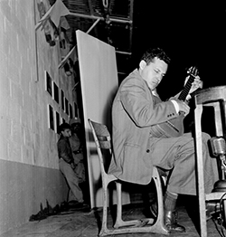

Joroponovo: Gestación
de un nuevo género
Emilio Mendoza
|
|
|
Introducción
El presente
escrito tiene la intención de delinear los diferentes aspectos
incorporados para generar música propia en la guitarra de
cuerdas de nylon con elementos provenientes del joropo
venezolano, estilo musical que se le ha bautizado con el nombre
de "joroponovo". Esta iniciativa creativa se ejecuta en una
agrupación de cuarteto de guitarra de 6 cuerdas de nylon, con
guitarra 12 de cuerdas de metal, bajo eléctrico y maracas (más
otra percusión pequeña también), y su música se cristaliza en el
disco compacto Guarapiche
Blues de Ozono Jazz, 2020. La evolución instrumental
se ha llevado a cabo a través de la trayectoria del autor con el
grupo Ozono Jazz desde el año 2005, iniciándose tímidamente un
año antes con el grupo Akurima
en el tema Giros, grabado en el disco compacto Bajo un Cielo Toronjil
(2005), donde el autor realiza un solo en esa
pieza con elementos de la bandola llanera. El desarrollo del joroponovo pretende
establecer en la guitarra un sonido de arpa y de bandola, a
diferencia de la tradición de la guitarra del joropo central, por admiración y respeto a
un género que manejaba su gran amigo, el guitarrista
tuyero Pedrito Díaz de San Antonio de los Altos (ver artículo Manos de Plomo...). Se decidió buscar una alternativa en la técnica de
ejecución y de su resultado sonoro así como de otros aspectos
más relevantes como la agrupación instrumental sin cuatro y
sobretodo, en la composición de estructuras armónicas y formales
más complejas, para sonar de cierta manera diferente al joropo
tradicional pero manteniendo un vínculo o "sabor" de esa cultura
musical extraordinaria.
Ozono Jazz
y su
joroponovo
Este estilo utiliza la
técnica de arpegio de la guitarra clásica con p, i, m, a, en la
mano derecha en imitación al sonido de las arpas central y
llanera, al usar el recurso de acordes con cuerdas al aire y
pisadas, así como el ataque recio con plectro de la técnica de
ejecución "jalao", particular de la bandola de los llanos del
estado Barinas, Venezuela. El charrasqueo, repique, frenado y
rasgueado, así como los acordes en golpes secos de la mano
derecha –técnicas propias del cuatro venezolano– son adoptados a
la guitarra dentro de un lenguaje fuertemente rítmico de
compases compuestos (4/4. & 6/4), riqueza del joropo
tradicional, pero con una estructura armónica y formal propia,
nunca utilizando las progresiones tradicionales como Guacharaca,
Periquera, etc. El autor tuvo que consignar una guitarra de
cuerdas de nylon electroacústica pero que no produjera
retroalimentación en el escenario, que tuviera una acción baja
para poder hacer todas las técnicas del cuatro de la mano
derecha, con diapasón un poco más angosto que el acostumbrado a
la guitarra clásica (1 7/8" en vez de 2"), para poder adaptarle
la técnica del " jalao", y con afinación precisa en las pisadas
de las cuerdas 4, 5, 6 en los trastes superiores (XII - XXII),
que suenan junto a cuerdas al aire. La solución fue la serie
Multiac de las guitarras canadienses Godin, de las cuales el
autor compró dos, la Multiac ACS-SA negra y la Multiac Nylon
Duet Ambiance.
En cuarteto
Junto a la guitarra
principal de cuerdas de nylon, la guitarra 12 nos ofrece un
amplio espectro de versatilidad sonora y potencial rítmico, con
breves paseos por diversas culturas y el comentario continuo a
la composición en forma de parafraseos. Su sonido metálico con
doble ordenes en octavas y unísonos provee la sonoridad típica
del arpa central, sobretodo si se toca con rasgueado lento del
plectro, así como el sonido charrasqueado y apagado (muted),
sonido casi completamente percusivo que emplea el arpa central
al tocar sus bajos apagados con la mano izquierda. Puede sonar
también a un sitar y tanpura de la India así como al estilo country
& blues norteamericano. Sus armónicos son exquisitos y
amplía el rango del espectro de frecuencias disponible del
cuarteto. El bajo eléctrico atrapa como base la complejidad
rítmica de sus compañeros y establece la “onda” de cada parte,
actuando muchas veces como la voz solista y libre, así como en
contrapunteo con la guitarra. El sello final del joroponovo se
corona con la ejecución virtuosa de las maracas, junto al show
visual en vivo de sus movimientos, sin duda, el rey de los
instrumentos venezolanos. Para información referencial sobre
otras fusiones pop-folk en Venezuela así como el uso del joropo
en el ámbito de la música popular venezolana, ver el artículo
del autor "La
Utilización de Instrumentos Étnicos...", ya que hay
antecedentes muy importantes, sobretodo en la producción de
Vytas Brenner en 1973. Sobre los conceptos de fusión,
neofolklore, y el resumen de estos procedimientos en el concepto
de la apropiación cultural, ver los artículos escritos por el
autor para la Bloomsbury
Encyclopedia of Popular Music of the World.
¿Qué ritmo usar?
La conformación
planificada del grupo de música Ozono Jazz, luego de que el
autor había pasado por una serie de diferentes grupos anteriores de jazz
desde el 1999 (ver Grupos),
se inició en enero 2005 en San Antonio de los Altos (ver FUNCIÓN). Se aplicó
un análisis retrospectivo de la práctica de ejecución musical
que se había llevado a cabo en múltiples toques en bares, clubs
y fiestas, principalmente con la guitarra de 6 cuerdas de nylon
(Emilio) y la guitarra de 12 cuerdas de metal o bajo eléctrico
(Ike Lizardo), así como a veces con el acompañamiento de Ulises
Farías (luego Dha Maharaj) en el tablã de la India y Francisco
Issa en el saxo, (ver Conciertos
2005-2009). Surgió la necesidad de escoger un ritmo para el
grupo, que en gran medida definiría el estilo y segmento de la
música popular en donde se ubicaría al grupo por nacer, Ozono
Jazz.

Primer ensayo de Ozono, La Perla, San Antonio, 01-2005
Aparece un joropo recio
Una de las primeras piezas
que nos atrapó la atención, no solo por parte de nosotros los
músicos en gran disfrute al tocar en vivo sino también del
público que nos escuchaba, fue la composición Espirales
que utilizaba la técnica del "jalao" típica de la bandola
llanera de Venezuela. Quizás fue por su sonido
con sabor venezolano dentro de un ambiente de jazz de
locales nocturnos y por la novedad de oír una guitarra
"bandoleada", que sonaba a joropo llanero pero sin estar
tocando un joropo... Esta pieza es un joropo
"recio" en términos llaneros y fue premeditadamente construida
de secuencias armónicas "dulces" y atractivas. Ver Espirales
para más detalles sobre estos procedimientos.
Nos llamó la atención el ritmo del joropo que tradicionalmente
existe en toda Venezuela, con diferencias locales por supuesto,
que conlleva actualmente
una actividad viva y estable. Al contrario de muchas
manifestaciones tradicionales en el país que están en franco declive y que
son sustituidas por músicas grabadas y externas a
su entorno cultural local y extendido, el joropo existe, activo
y persistente. La manifestación del joropo principalmente en su
baile de fines de semana, toma lugar todo el año y no está
limitada a vínculos ni a temporadas del calendario religioso
cristiano como la mayoría de la música tradicional venezolana.
Es decir, el joropo es al mismo tiempo una música tradicional
portadora de una fuerte identidad venezolana en todo el país a
pesar de sus diferentes zonas geográficas, climáticas y
culturales, y es al mismo tiempo una música perteneciente a la
industria y comercio mediático musical, siendo más típica en la
zona de los llanos venezolanos y recientemente también
colombianos. El autor tardó bastante tiempo en lograr la
adaptación del "jalao" del dedo medio de la mano derecha al
espacio de seis cuerdas para tocar bandoleado en Espirales,
pero como se explicará más tarde, esa dificultad hizo posible
también dar tiempo a desarrollar la técnica del arpegio de la
mano derecha para tocar al estilo "arpeado" con p, i, m, a.
¿Cómo se toca joropo en la guitarra?
Podemos resumir ciertos aspectos necesarios que el músico debe
abordar para tocar joropo en la guitarra, ejemplarizando con la
trayectoria del autor y cómo él fue logrando dominar estos
requisitos varios. Es una aproximación biográfica por la
asombrosa coincidencia de eventos y oportunidades que, vistos en
retrospectiva, todos colaboraron en desembocar en este estilo
nuevo, a pesar de que el autor no tenía ninguna idea ni
pre-concepto hacia dónde se dirigía ni del resultado final a que
este desarrollo de muchos años llevaría.
La estructura rítmica del joropo se constituye de varios
pulsos posibles que aparecen simultáneamente, no todos son
amistosos entre si, es decir, no coinciden, y su encanto surge
por la contradicción entre los diferentes pulsos: tenemos 3/8
en las maracas, cuya negra con puntillo luego se agrupa en dos
pulsos para formar el 2/4. (o 6/8) en manos del cuatro que a
su vez también juega en darnos el 3/4, mantenido por el bajo,
coexistiendo un 2 vs. 3. El arpa, bandola o guitarra disfrutan
con estas contradicciones, jugando y haciendo los tres pulsos
a placer (3/8, 2/4. y 3/4), además de un 3/2 adicional. El
músico eventualmente puede pasar de una a otra de estas capas
de diferentes pulsos sin problemas pero este sentido
no es fácil de dominar con naturalidad y la mejor forma de
asentarlo es bailándolo
dentro de su contexto cultural así como tocando
joropo tradicional u otra música con la misma estructura
rítmica, con acompañantes o en conjuntos.
¿Qué se necesita?
- Sentir musicalmente la complejidad
rítmica del joropo, a través de la práctica del baile
- Sentir
musicalmente la complejidad rítmica del joropo, a través
de la práctica instrumental tradicional:
Ejecutar joropo u otro ritmo similar con el cuatro, maracas,
bandola, arpa, y/o percusión.
- Entrenarse en la guitarra en los
aspectos técnicos siguientes:
- La mano derecha en arpegios rápidos y sostenidos con p, i,
m, a
- La mano derecha en el "jalao" con el plectro y el dedo medio
- La mano izquierda en arpegios de acordes M6, m7, V7, ø7, o7
1. Sentir el joropo - Bailar
Por lo tanto, se aconseja ir a bailar muchas veces joropo
central o tuyero toda la noche en los bares o restaurantes que
lo ofrecen los fines de semana en los Valles del Tuy, Altos
Mirandinos y sectores de Caracas. Como adolescente, el autor
acompañó muchas
veces a la señora de servicio de la casa, Elvira
Hernández, a bailar joropos por San Pedro de los Altos, Los
Teques, Carrizales, San Diego, ya que ella no tenía carro y me
pedía la cola. Ya esta música era familiar en la cocina de
la casa del autor porque Elvira tenía un radiecito todo el día
prendido con una estación de radio AM dedicada al joropo tuyero
sin interrupción, y muchas veces el autor terminaba recibiendo
clases de baile en la misma cocina con la señora Elvira. Ya como
profesor, mucho tiempo más tarde, el autor impartía un curso de
Estudios Generales en la Universidad Simón Bolívar, (1998-2013),
llamado "Folklore Musical de Venezuela" (CSX-623), el cual incluía
entrenarse a bailar en la última media hora de la clase y salir
todos a bailar en autobús de la universidad unas tres veces por
trimestre a un joropo de verdad. También se realizaba en el
campus la serie de joropos tocados y bailados, "El Joropo en la
Simón", dos veces por trimestre en el Conjunto de Auditorios.
Además, al final del trimestre, el autor hacía una fiesta en su
casa con todos los alumnos, una parrillada, para la cual se
contrataba a unos joroperos tradicionales para que tocaran
durante toda la tarde hasta el atardecer, al irse los
joroperos a sus toques, transformándose la reunión en
descargas y jam-sessions de los amigos
roqueros y jazzistas del autor, amigos músicos de la zona de San
Antonio.
Esta tradición era anteriormente parte de la vida en los Altos
Mirandinos, donde está ubicado San Antonio de los Altos, conocida como las "peñas",
y la madre del autor, Sarita
Guardia de Mendoza, tiene fotografías del año 1956 donde
se aprecia a muchachos jóvenes tocando en casas o en la Plaza
Bolívar el arpa tuyera, prácticas que después de Pedrito Díaz
(ver arriba), no volvieron a aparecer. Existen restaurantes
llamados 'carne en vara' a la orilla del camino o de la
autopista, donde siempre incluyen una agrupación de joropo
llanero para amenizar la comida o bebida, usualmente con los
instrumentos amplificados en
exceso, pero no constituye una práctica de
baile sino que tienen la función de acompañar la comida,
contrario a la práctica de los tuyeros donde la gente acude al
evento simplemente a bailar y se puede bailar en pareja con
cualquier persona que esté sentada. El autor consideró que él
formaba parte intrínseca de una tradición de guitarra tuyera en
San Antonio de los Altos, que se había roto con la muerte de
Pedrito Díaz y por supuesto con el advenimiento gradual del rock
desde los años 70 que formó otra tradición musical paralela muy
fuerte en esa zona con el cantautor PTT Lizardo a la cabeza (ver
artículo sobre la música
popular en San Antonio y el artículo y
web sobre PTT).
 
Joropo en San Antonio.
Pedrito Díaz, ganador de un concurso
junto a Benjamín Mendoza.
Foto: Sarita,
1956.
Foto: Sarita, 1956.
2. Sentir el joropo - Tocar Cuatro
El entrenamiento musical de los niños en Venezuela en los años
cincuenta casi siempre incluía las clases de cuatro en las
escuelas, en la comunidad cercana o en clases privadas a los
niños de varias familias. El autor recibió desde pequeño
instrucción del cuatro con el profesor Quero y en Navidades
empezó a acompañar aguinaldos y gaitas en las parrandas
navideñas que visitaban cada casa en las madrugadas, así como
tocar en fiestas, cumpleaños y paseos familiares a la playa. Todas las
casas contaban siempre con un cuatro, tradición que no se ha
continuado más hoy en día, lamentablemente, así como tampoco las
clases de cuatro, quizás por el auge de las orquestas sinfónicas
de El Sistema a pesar de que cambiaron su estrategia en los
últimos años para incluir los instrumentos tradicionales
venezolanos. El profesor Quero lo instruyó con el joropo, el
aguinaldo, el merengue caraqueño y el nuevo ritmo inventado por
Hugo Blanco, ya famoso en los sesenta con su inigualable hit, Moliendo
Café, su "Ritmo Orquídea". El cuatro exige una fuerte base rítmica
dentro de un lenguaje armónico tonal, todo por oído.
Desde muy pequeño, el autor recibió una sorprendente influencia
musical por dos vías muy distintas. Sus padres ponían música de
J. S. Bach, L. v. Beethoven y A. Vivaldi, entre otras, cada vez
que se sentaban en la mesa a comer, y el autor terminó cantando
las Cuatro Estaciones de Vivaldi enteras de memoria. Por
otro lado, cada vez que iban a Caracas, visitaban a la abuela
Sara Blanco de Guardia en su casa de San Bernardino, donde
usualmente almorzaban. En un cuarto a media luz se encontraba
siempre su tía Beatriz, la más joven de los hijos de la abuela
Sara, sentada en un mecedor viendo televisión, casi siempre un
programa donde Juan Vicente Torrealba tocaba el arpa y Mario
Suárez cantaba vestido con un liquilique blanco. La tía Beatriz,
minusválida, tenía un problema mental de nacimiento y no podía
caminar ni hablar, siempre estaba sentada en el mecedor con una
guitarrita pequeña todo el tiempo abrazada, la tocaba y pegaba
gritos junto a los joropos estilizados que sonaban en la
televisión en blanco y negro. El autor se sentaba a escucharla y
le tenía mucho cariño, abrazándola, y ella le permitía que
tomara en sus manos su guitarrita y la probara, aunque tenía una
sola cuerda. Fue el primer contacto que el autor tuvo con este
instrumento, lleno de pasión y tristeza al mismo tiempo como el
único vehículo de expresión de la Tía Beatriz.

Guitarrita de la Tía Beatriz
En un viaje que hace el autor con su hermano Claudio en julio,
1964, a un campamento vacacional cerca de Boston, MA, EEUU, se
fotografían ambos en el aeropuerto con su padre Benjamín, cada uno con un
cuatro en la mano. Para el autor, al no hablar ni entender nada
de inglés a esa edad, el cuatro que llevó consigo en este viaje
se convirtió en su único amigo con quien podía comunicarse y
desde sus 10 años, la música ejecutada se convirtió en su
acompañante inseparable de por vida, ya componiendo piezas con
el cuatro al no poder entender ni hablar con nadie en ese viaje.
Con esta
experiencia se convierte en músico para siempre. En
1973 toma un curso de extensión sobre el Cuatro Solista en la
Universidad Simón Bolívar, dictado por el famoso cuatrista
Freddy Reyna, viejo amigo de la casa de la familia en San
Antonio, ya que con la mamá del autor, Sarita, hacían
presentaciones de títeres hechos por ellos mismos. El famoso
Freddy Reyna tocaba en la casa de la familia en todas las
reuniones y según el papá del autor, Benjamín Mendoza, no paraba
de tocar hasta el punto de que había que sacarlo porque no
quedaba nadie.
 

En
el Aeropuerto de Maiquetía, antes
de Freddy Reyna tocando en la
Plaza Bolívar de San Antonio, (Sarita, 1956),
despegar a Boston. El Nacional, 31-07-1964
con la exposición de fotografías de
Sarita detrás, en las Fiestas Patronales del pueblo.
Tocar Maracas
Al partir para Alemania en 1976 para estudiar el Diplom in
Komposition en la escuela superior de música Robert
Schumann Institut, Düsseldorf, el autor vivió en una residencia
de estudiantes de medicina en 114 Strümpelstraße, Düsseldorf. Se
había llevado consigo la guitarra, un cuatro y un par de
maracas, así como varios cassettes de música venezolana, en su
mayoría joropos. Practicaba todo el día el cuatro y
especialmente las maracas tocando junto a las grabaciones de
joropos llaneros en su pequeño cuarto encerrado y empezó a
analizar la rítmica de la bandola y del joropo mientras mantenía
el toque básico de maracas. Resultado de esta experiencia en la
comprensión analítica y en experiencia práctica del ritmo del
joropo, fue su composición Arsis,
1978, (Flt, 2 Pfte, 2 Perc., Cb), que nunca se ha ejecutado, y
es una composición completamente basada en un pensamiento
rítmico. Fue escogida para el Festival Días Mundiales de la
Música de la Sociedad Internacional de Música Contemporánea
(ISCM) en Atenas en 1980, pero no se pudo estrenar por confusión
de los músicos ejecutantes en el aspecto rítmico. Sólo existe
una grabación de un minuto de la pieza que el autor financió en
Düsseldorf, ejecutada por sus colegas músicos de la RSI, para
confirmar que su composición rítmica funcionaba. Por su puesto,
para todas las fiestas de los amigos
y amigas en Alemania el autor era invitado para que armara la
pachanga tocando cuatro, maracas y cantara, luego añadiendo los
tambores africanos que se pusieron de moda por las clases
recibidas en Die Werkstatt en Düsseldorf, de música y baile de
Ghana, África Occidental.
Tocar Percusión - Agbadza, Ghana
Se aconseja conocer y tocar percusión de otras culturas que
emplean música con la existencia de varios pulsos antagónicos
simultáneos como el joropo. En el caso del autor, esto lo pudo
realizar a partir del año 1978, al meterse en clases regulares
de percusión y danza africana en Die Werkstatt, Düsseldorf, con
el Master
Drummer Mustapha Tettey Addy, así como con Aja, y luego con
Rashid Omoniyi Okonfo. Al graduarse de sus estudios académicos
en la escuela superior de música en julio de 1981, culminó
con la experiencia de cuatro meses
(sept - dic, 1981) en una estadía en Kokrobitey, Ghana, en donde
estuvo intensamente tocando percusión africana (campanas,
calabash y tambores). Practicaba todos los días danza africana
con diferentes ritmos pero especialmente con Kpanlogo (binario)
y Agbadza (ternario), que está en 4/4. + 6/4. Tocó además el
cuatro con ritmos venezolanos en los Wake-Keeping o
velorios de varios días seguidos que realizaban en Ghana
mientras el muerto se descongelaba. Esta experiencia le sirvió
para vislumbrar la rítmica basada en pulso, transcribir todos
los ritmos que le enseñaba el Master Drummer Addy, de lo
cual produjo posteriormente el Sistema
Modular para Lectura y Transcripción Rítmica y, por
supuesto, obtuvo un conocimiento profundo de lo que se trataba
el ritmo y su relación al pulso, tanto práctico como conceptual,
enseñanza completamente ausente en nuestra formación musical
tradicional académica. En su estadía
posterior en el cargo de Profesor Asistente en la Crane School
of Music, State University of New York (SUNY-Potsdam),
1991-1995, impartió clases de Teoría Rítmica a nivel de Licenciatura y
luego, en el postgrado de la Universidad Central de Venezuela en 1997-1998,
impartió un curso similar a nivel de Maestría (ver detalles en
su CV completo).
Tocar Bandola llanera
A su regreso de Alemania y Ghana, 1981, se desempeñó como fundador, director
y ejecutante en la ODILA -
Orquesta de Instrumentos Latinoamericanos (1982-1987), con
composiciones de música con ritmos venezolanos además de
ejecución de música tradicional de toda Latinoamérica y
ejecutando la bandola llanera en cientos de conciertos con
este ensamble experimental, nacionales e internacionales. Este
instrumento lo aprendió a tocar en 1982 en seis meses de
cursos semanales en la Escuela La Clavija, Caracas, con Saul
Vera y luego, por haber aprendido su ejecución rápidamente,
tuvo que enseñarla a los integrantes de la ODILA debido al
hecho de que Saul Vera abandonó el proyecto a pocos meses de
haberse iniciado el curso por falta de pago (ver el desarrollo
de la ODILA en el artículo
sobre instrumentos étnicos). Para este propósito se vio
obligado a desarrollar en 1982 un método de aprendizaje de la
Bandola Llanera debido al hecho que el que había utilizado
para aprender, el método de Saul Vera, lo había criticado
fuertemente, lo que eventualmente los alejó como colegas. A
pesar de esta posición en contra de su método, Saul lo asignó
suplente varias veces en su cátedra de Bandola en la Fundación
Bigott. La Bandola Llanera se había convertido para el autor en una
obsesión desbordada, llevándola en el carro, en autobuses, en
paseos para la playa, en reuniones familiares y de amigos, y
le asignaron el apodo "Emilio y su Bandola." Las novias del
grupo extendido de amigos y familiares eventualmente hicieron
un boicot y le prohibieron a él y a su hermano Claudio, llevar
la bandola y el cuatro a los paseos porque no le dedicaban
tiempo a ellas ¡al estar tocando joropos sin cesar, en la
arena de la playa, en el carro, en el restaurante...!. Con
esta experiencia pudo desarrollar la técnica del "jalao" en la
mano derecha, técnica muy específica de este instrumento.
Con la ODILA, por supuesto, ejecutó mucha música de rítmica
parecida al joropo, tanto de Venezuela como de Latinoamérica,
ejecutando joropos en la bandola, maracas, guitarra, así como
tocando la percusión y tambores, sea como solista o acompañando
a otros. Juntó esta actividad con el Ballet Coreoarte y la José
Limón Dance Company con resultados de composiciones con bandola
llanera, como la ancestral Memorias de la coreografía El Último Canto en un
trabajo en conjunto con el coreógrafo Carlos Orta. En 1984 le
grabaron un video tocando "Los
Diamantes" en la bandola en una fiesta durante la gira del
Ballet Coreoarte de 1984 por Alemania,
al que fue invitado a viajar como músico.
Paralelamente a la ODILA y Coreoarte, ejecutó cuatro, guitarra y
bandola llanera en la agrupación Key Yumei (1983-1986), con
Alfredo Rugeles de director, con quienes estrenó su primera
pieza para bandola llanera y acompañamiento, Marisela, grabada
en un cassette La Voz del Canto Latinoamericano,
editado por el grupo en 1986. En 1988, ya en Washington, DC,
estudiando el doctorado, conforma una agrupación con arpa,
bandola+cuatro y bajo, llamada Little Venice,
presentándose en unos cuantos conciertos en el Instituto
Smithsonian. Posteriormente, en 2004-2006 en Venezuela, realizó varios
conciertos y un programa para la televisión con un trío llamado
Guama Eléctrica,
con bandola amplificada, cuatro solista (Elías Torres) y
guitarra (Gerardo Osal), en San Antonio.
3. Entrenamiento Técnico en la Guitarra
Es
altamente aconsejable llevar a cabo el entrenamiento de
técnica instrumental para los siguientes aspectos específicos
de la guitarra, a saber:
- Arpegios rápidos de la mano derecha con
p-i-m-a
- Técnica del
"jalao" en la mano derecha con plectro y dedo medio m
- Arpegios en la mano izquierda para los
acordes M6, m7, V7, ø7, o7
Debe referirse al método de guitarra con el nombre de "Los Patrones de
Emilio", que conlleva una práctica rutinaria fija que
sirve a ambas manos y para lograr desarrollar una técnica sólida
de ejecución, que, como vamos a ver en adelante, es
imprescindible para tocar el joropo a la velocidad que se exige
para tener el goce típico de esa música. Se necesita también
desarrollar arpegios de acordes en la mano izquierda de las
armonías comunes para poder hacer el toque del jalao
debidamente, con el cual se hacen arpegios de acordes todo el
tiempo en la bandola con el ritmo de joropo. Afortunadamente,
esta técnica la venía desarrollando el autor ya desde hace mucho
tiempo como parte del método de guitarra y no fue difícil
realizar la adaptación para la guitarra. Ver el método Los Patrones
de Emilio también para los patrones de arpegios
de acordes.
El autor había tomado varios cursos de
joropo tuyero para la guitarra incluyendo a Juan Peña, además de
tocar con Pedrito Díaz a quien le pagaba las clases con cuerdas
nuevas de guitarra, así como pudo tocar en la guitarra
con facilidad las piezas Seis por Derecho y Pasaje
Aragüeño de Antonio Lauro, entendiendo que la técnica de
la guitarra tuyera era muy diferente a la de la guitarra clásica
donde se utilizan los cuatro dedos de la mano derecha (p-i-m-a)
cuando en la guitarra tuyera, en general, se utiliza sólo el
pulgar e índice, y por lo tanto tenía que experimentar y
desarrollar la música dentro de dos ambientes: Joropo Arpegiado y Joropo
Bandoleado.
Joropo Arpegiado
Es necesario desarrollar
la técnica de arpegios con la mano derecha p-i-m-a con
suficiente velocidad. En la pieza Encanto del CD
Guarapiche Blues
se muestra un comienzo en bossa lento y una ruptura del ritmo de
joropo cerca del final, que cambia de un joropo a blanca con
puntillo a 74 ppm, a un 4/4 a 68 ppm en ritmo de bossa. Lo que
sucedió inicialmente fue que la mano derecha se le trancaba al
tocar en vivo a esa velocidad (74 ppm) y se cambiaba de pulso de
blanca con puntillo (4/2.) a negra en 4/4 para descansar la
mano. Eventualmente esta trampita por necesidad física, llevó a
incorporar el recurso de descanso dentro de la estructura de la
composición, ¡naciendo un joropo con bossanova!. Para grabar la
pieza a esa velocidad fue necesario practicar una rutina de
ejercicios por varias semanas para tener las manos en forma. Por
lo tanto, el guitarrista debe tener una práctica diaria de
escalas con metrónomo usando los dedos p-i-m-a, para tenerlos
bien preparados para hacer arpegios rápidos y sostenidos en la
mano derecha. Se suma a esta técnica, el conocimiento de tocar
cuatro con charrasqueo, frenado, rasgueado y repiques, que se
usan en la guitarra adicionalmente a los arpegios, y el
conocimiento de poder acompañar por oído los joropos
tradicionales. Este conocimiento es altamente importante y se
forma escuchando y tocando. Para conocer el joropo tradicional y
poder acompañar sus varios tipos o especies que lo constituyen
(unos 21), se debe practicar con unos joroperos cercanos que los
sepan todos y se recomienda altamente leer en detalle la tesis
de maestría de Jean Carlos González Queipo, "Transcripción y
Descripción de 21 Especies del Joropo Llanero Venezolano." Esta
tesis la inició Queipo con el autor como tutor y luego la
terminó con otro tutor. Contiene todas las referencias más
importantes para este tema, por lo tanto no hace falta
repetirlas en este escrito, así como las progresiones armónicas
de todas las 21 especies de joropos. Por favor solicitarla
directamente a su autor al correo jeanca72@gmail.com
Existe una tradición de
interpretación en la guitarra del joropo venezolano en sus
diferentes variantes regionales (central, llanero, oriental).
Igualmente encontramos ciertas composiciones para guitarra
clásica con características del joropo, como el Seis por
Derecho y el Pasaje Aragüeño de Antonio Lauro,
gran compositor de música para este instrumento, más conocido
por sus "Valses Venezolanos." En la serie Colección de
compositores venezolanos para guitarra publicada por la
Fundación Vicente Emilio Sojo/CONAC, 1998, y editada por
Alejandro Bruzual, se encuentra un cuerpo de composiciones y
arreglos para guitarra con ritmos venezolanos incluyendo al
joropo y formó una fuente valiosa de referencia para el autor.
La tradición más pronunciada de joropo y
guitarra en la actualidad en el país es la de la guitarra del
joropo central pero hay muy pocos joropos bailables con
guitarra en comparación con la cantidad de bailes con arpa. En
algunas poblaciones como en Guarenas-Guatire, hay un
desarrollo hacia el uso de la guitarra eléctrica amplificada y
acompañamiento de bajo eléctrico, batería y el baile en
formación grupal tipo Bollywood, como en el caso de "Los
Metralletas".
Examinando la literatura mencionada, así
como realizando transcripciones de ejecutantes de la guitarra
central y su propia inventiva instrumental ya teniendo el
sentido del joropo dentro de su mundo musical, el autor ha
producido un grupo de patrones básicos de joropo en la
guitarra, como recurso para la aproximación del ejecutante y
estudioso de la guitarra a este género de música tradicional
venezolana, con ejemplos musicales y videos de los patrones.
Las piezas que utilizan esta técnica son: Espirales, Encanto, Sol de Mañana, Desamores, Añoranza, Guarapiche Blues, Sentir del Viento,
Danzas de Vida y un
pedacito central en Terruño.
Se consideraron ciertos aspectos específicos en esta
adaptación, que se discuten a continuación:
El bajo apagado
Tanto en la
música de joropo central para arpa como para guitarra, el bajo
en figuras de 3/4 y 3/2 se toca apagado y bien seco en ciertas
partes de la música, es decir, suena como si fuera un
membranófono más que un instrumento de cuerda con altura
definida. El apagamiento (muted) es tan corto que casi no
se percibe la altura de la nota emitida, convirtiéndose en una
línea principalmente rítmica a pesar de que las cuerdas (en el
arpa) y/o pisadas (en la guitarra), están basadas en la tónica
del acorde con su cuarta por debajo como arpegio adicional del
mismo acorde, o de la dominante de la tonalidad. El rol de este
bajo es producir la base en 3/4, usualmente con el primer pulso
marcado y su anacrusa del tercer tiempo (ver abajo). Para
realizar este bajo apagado de características percusivas en la
guitarra es necesario ejecutar con la mano derecha apagando las
cuerdas con la parte inferior del músculo del pulgar, técnica
que contradice la posición acostumbrada en la tradición de la
guitarra clásica, en la cual la mano derecha se mantiene en
contacto con las cuerdas sólo con las puntas de los dedos. Si se
adopta la técnica de apagado en la mano derecha, el guitarrista
con entrenamiento clásico no podrá tocar con la agilidad
acostumbrada. Otra solución a este problema es apagar las
cuerdas con algún dedo sobrante de la mano izquierda, como es el
caso usualmente del dedo cuatro, tomando gran cuidado de no
producir armónicos lo cual es bastante difícil porque las
cuerdas emiten armónicos en casi todas las posiciones, sobretodo
en las cuerdas entorchadas. Esta solución además restringe el
uso de un dedo de la mano izquierda y de la música que se pueda
tocar con tres dedos y no cuatro. En la partitura Pasaje
Aragüeño de Antonio Lauro, cuya caracterización es
evidente como música del joropo central, no se menciona nada al
respecto y el autor ha escuchado que ha sido tocada siempre con
los bajos abiertos y sonantes, resultando un sonido
desnaturalizado de lo que realmente es el sonido del joropo
central tradicional. La solución del autor es no apagar los
bajos ya que le imprimen mucha sonoridad a la guitarra por el
hecho de que las cuerdas 4, 5, y 6 tienen más duración al
ejecutarlas que las 1, 2, y 3. Por otro lado, se puede resolver
este problema al ejecutar este tipo de música junto a otros
instrumentos que suplan este efecto del bajo apagado, como puede
ser una batería con su bombo en el ritmo mencionado o un bajo
eléctrico o contrabajo en pizzicato para aliviar a la guitarra
de esta función. Se observó en la tradición de joropo central en
la guitarra, que este sonido es quizás el más importante y que
el guitarrista lo ejecuta apagado y utiliza sólo un dedo
adicional, usualmente el índice de la mano derecha para realizar
algún relleno o alguna melodía, y por lo tanto no se realizan
arpegios más elaborados con los otros dedos de la mano derecha.

El tempo del
joropo central y llanero, cuando no es pasaje, puede variar
desde 136-156 ppm o más, la negra con puntillo (en 2/4.), o
204-210 la negra (en 3/4). La ejecución de este tempo en la
guitarra disminuye la aplicación de arpegios más sofisticados de
la mano derecha y por lo tanto se explica el uso de la mano
derecha arriba mencionado, con su bordoneo apagado con algún
relleno del índice. Por lo siguiente, hay dos soluciones para
tocar joropo en la guitarra, o se simplifica el toque o se baja
el tempo para permitir arpegios elaborados, o el ejecutante se
enfoca en subir la velocidad de su ejecución con entrenamiento
sostenido. El autor decidió bajar el tempo y aplicar el
desarrollo gradual de la técnica para alcanzar el tempo real del
joropo. No obstante, a menor tempo (124 ppm por ejemplo, de
negra con puntillo), el resultado es atractivo sin tanta
exigencia técnica, y el autor puede también sugerir mantener
este tipo de tempo más lento, no tan bailable como el tempo real
utilizado en la tradición que es el mejor para esta función, y
que se desarrolle otro aspecto o género del joropo en la
guitarra, más pausado, más cool. Si no, el joropo como
se está proponiendo sólo podrá ser ejecutado por muy pocos
guitarristas que alcancen y sostengan estas velocidades. Para
grabar Encanto con
blanca con puntillo a 74 ppm, el autor tuvo que entrenarse
varias semanas antes. Para el caso de la ejecución bandoleada
con el plectro y el jalao, afortunadamente no hay ninguna
dificultad para desarrollar niveles rápidos de tempi.
Sonoridad
La sonoridad
armónica del arpa y en especial del arpa central con algunas
cuerdas de metal, no se refleja en la guitarra con la técnica
tradicional. Para lograr más notas sonando y cuerdas sonando por
más tiempo, se propone configurar la tonalidad para tocar en la
guitarra de acuerdo a la posibilidad de tener cuerdas al aire
que estén sonando continuamente, y tocar acordes y posiciones de
la mano izquierda en la guitarra que permitan mantener algunas
cuerdas al aire siempre sonando. Esta digitación es más difícil
por que se deben mantener los dedos de la mano izquierda bien
paraditos, verticales, para no rozar las cuerdas adyacentes en
función de que se mantengan sonando ni tampoco hacer barras,
pero le otorga un volumen y sonoridad a la guitarra parecidos al
esplendor armónico del arpa. La configuración de las tonalidades
es en función de que estas cuerdas al aire, como la 1, 2, o 3,
(E, B y G) no choquen en disonancia con la tonalidad de la
pieza, es decir, tocar en las tonalidades de D, A, E, G, C
principalmente, y ya en E mayor se debe tener cuidado de ni
rozar la cuerda 4 (D) ni la 3 (G). Otra posibilidad que no se ha
probado todavía pero no se descarta como opción a desarrollarse,
es la utilización de cambios de afinación de las cuerdas, de la
afinación tradicional, práctica muy común en la tradición, según
Pedrito Díaz. Por último, algún patch de efectos como un
toquecito de Chorus y Reverb así como un toque de compresión
ayuda a tener un sonido más amplio y duradero en la guitarra.
Joropo Bandoleado
El método de bandola
se generó porque Saul Vera como profesor de la ODILA para la
Bandola llanera, discontinuó sus clases de bandola en el
Conservatorio de la ONJV en El Paraíso, Caracas, en octubre,
1982, a poco tiempo de haberlas empezado. Su queja era
justificada porque no se le estaba pagando nada a pesar de
estar dando clases varias semanas, ya que el presupuesto
asignado por FUNDEF/CONAC/ONJV al proyecto ODILA, no se hizo
realidad sino hasta que toda la ODILA amenazó a José Antonio
Abreu, presidente de la ONJV, de boicotear el concierto de
celebración del Bicentenario del Natalicio de Bolívar y no
tocar en la noche del estreno de la ODILA el 12 de febrero,
1983, con presencia del Presidente y todo el gobierno para
el Día de la Juventud. En esa misma noche, justo antes
del concierto, Abreu apareció con el chequecito en la mano y
se procedió a realizar un concierto espectacular. A pesar de
tener al fin el financiamiento para el proyecto ODILA, ya Saul
Vera se había ido y el autor tuvo entonces que dar las
clases de bandola en la ODILA. Como no estaba de acuerdo con
el método de Saul Vera, realizó su Método para
ejecutar la Bandola Llanera aún por
publicarse, donde se expone toda la técnica del "jalao"
tanto para la bandola como para la guitarra. Ejemplo de
ejercicios para la Bandola:
El
autor inició la experimentación de tocar el jalao en la
guitarra pero con una Gibson Les Paul Deluxe dorada '72,
guitarra eléctrica de cuerdas de metal muy delgadas. El
resultado de cada toque era una uña rota, la del dedo medio,
y/o la cuerda 1 rota. Por tal razón se emigró a la guitarra
de cuerdas de nylon, así como este hecho hizo también
posible el desarrollo de los arpegios de la mano derecha,
que si se usara la guitarra de cuerdas de metal, se
destrozarían todas las uñas de la mano derecha. Para más
información ver el Método de
Bandola. Las piezas con esta técnica incluyen Espirales, Guarapiche Blues y
un pedacito en el medio de Terruño, así
como el final de Giros
con el grupo anterior Akurima.
Arpegios de Acordes en la Mano Izquierda
La ejecución de joropo en la Bandola
Llanera se basa en una serie de patrones rítmicos que se
ejecutan con la mano derecha con el plectro y el jalao del
dedo medio, haciendo arpegios de acordes en la mano
izquierda. Por lo tanto, es imprescindible tener asentados
en la técnica de la mano izquierda los arpegios de acordes M6, m7, V7, ø7, o7,
arrancando con los dedos 1, 2 o 4, y en lo posible
practicar los patrones de la bandola usando estos arpegios
de acordes, con acompañamiento del cuatro. Para estos
patrones de arpegios de acordes en la guitarra, ver Los Patrones
de Emilio vol 2.
Literatura de Joroponovos
Otra manera de emprender el aprendizaje del joroponovo en la
guitarra clásica es sacar textualmente las piezas de Ozono a
través de su partitura y/o video lento de su ejecución,
material que en los próximos meses se publicará en la página
de cada pieza, especialmente de Encanto
(joropo arpeado) y Espirales
(joropo bandoleado). En estas piezas se incluye casi todos
los recursos mencionados, organizados para generar unas
composiciones atractivas e interesantes.
Referencias
Ver tesis de maestría (USB) de Jean Carlos
González Queipo, "Transcripción y Descripción de 21 Especies del
Joropo Llanero Venezolano."
Solicitarla directamente a su autor al
correo jeanca72@gmail.com